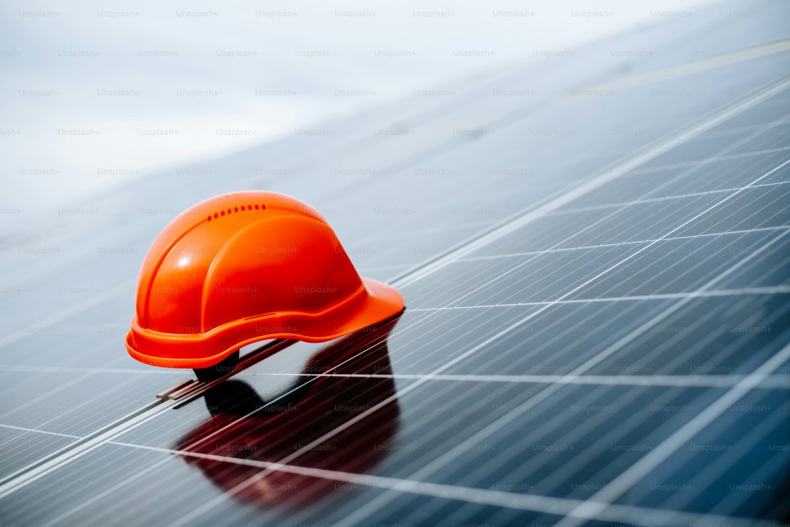
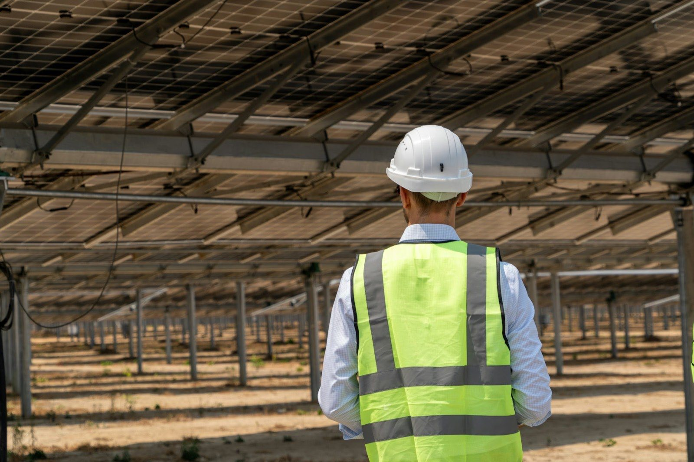
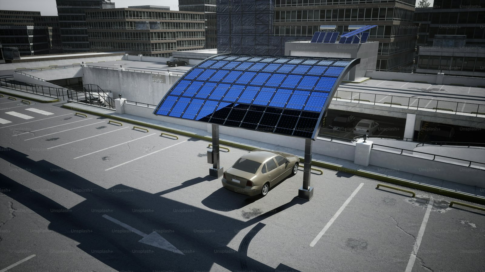

02 ─ O&M Service
光電案場維運
案場的收益不是完工那天決定的，是之後七千個日子裡，每一天決定的。
Overview
多數案場的發電損失不是來自戲劇性的故障，而是長期沒人發現的小問題：一串被遮蔽的模組、一台默默降額的逆變器、一片長年未清的積塵。
我們以 15 分鐘級的資料解析度持續比對實際發電與理論值，當偏差超過門檻就啟動查修，而不是等到月結報表出來才發現少了幾個百分點。
以系統可用率與 PR 值作為合約 SLA，而非只承諾「定期巡檢」
異常告警自動分級，重大故障 24 小時內到場
每月提供發電績效報表，含損失原因歸因分析
可接管他人建置之既有案場，先做基準量測再承接
What We Do
服務內容
-
 01
0124/7 遠端監控與告警
逆變器、電錶與氣象站資料即時回傳，異常自動分級告警，值班人員確認後啟動處理程序。
-
 04
04績效稽核與報表
每月績效報表含 PR 值、可用率、發電損失歸因與改善建議，資料可直接作為資產評價依據。

Specifications
服務承諾
服務承諾
與量測基準
以下為標準 O&M 合約的服務水準基準，可依案場規模與併網條件客製。
監控資料解析度15分鐘
系統可用率承諾≥ 98%
重大故障到場時間≤ 24小時
一般異常回應時間≤ 4小時
模組清洗頻率2 – 4次／年
紅外線熱像檢測1次／年
IV 曲線抽測每年 ≥ 10%
績效報表每月
服務涵蓋全台
Process
服務流程
-
01
接管盤點與現況評估
檢視既有圖面、保固文件與監控系統，確認設備狀態與待處理缺失清單。
-
02
基準量測
執行 IV 曲線與熱像基準量測，建立後續績效比對的起點，避免接手前後責任混淆。
-
03
日常監控與告警處理
系統持續比對實際與理論發電，異常分級後由值班人員判讀並派工。
-
04
定期保養與檢測
依排程執行清洗、除草、鎖固複查與電氣檢測，每次作業留存影像與量測紀錄。
-
05
月度檢討與改善
提供績效報表並就重複性問題提出改善方案，必要時安排設備升級或重新配置。
Good Fit
這項服務適合這些對象
 自建自用的企業案場
自建自用的企業案場 躉售型投資案場
躉售型投資案場
接手他人建置之既有案場
屋頂租賃模式的屋主 資產交易前的技術盡職調查
資產交易前的技術盡職調查- 銀行融資要求之第三方維運
不確定自己的條件適不適合？把現況資料給我們， 一次免費評估就能得到答案。